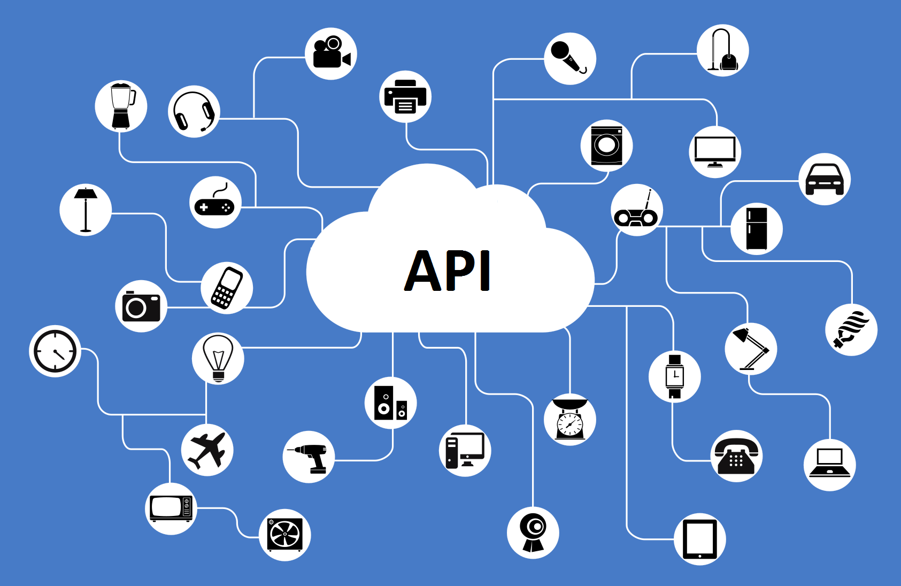

What is an API?
github/henrybv

Overview
- Definition: What is an API?
- Popular APIs: Examples & Use Cases
- How do APIs work under the hood?
- Step-by-step guide to using an API in your project.
Expectations
- A solid graps of JavaScript & understanding of how web applications work üëç
- Please participate by answering my questions üò∫
Links
1. What is an API?

API = Application Programming Interface:
A software intermediary that allows two applications to talk to each other.


We live in an API economy
- 90% of world's data created past 2 years.
- 75 B internet connected devices by 2020
- Business data becomes invaluable.
– S. Somasegar, VP of Microsoft’s developer division:
"In the world of cloud computing, APIs are the new currency."
2. Popular APIs: Examples & Use Cases
Uber API

Slack API

Slack Fund
3. RESTFUL APIS: How do they work?


APIs = endpoints to do a task when someone requests them.
An API consists of 3 parts:
- User: the person who makes a request
- Request: the computer that sends the request to the server
- Response: the computer that responds to the request
Example: Google Maps API call
REQUEST:
http://maps.googleapis.com/maps/api/geocode/json?address=Boston
? RESPONSE ?
Another example: Open Weather API call
REQUEST:
http://samples.openweathermap.org/data/2.5/weather?zip=94040,us&appid=b6907d289e10d714a6e88b30761fae22
? RESPONSE ?
Useful tools
Download: Postman tool & JSON View Chrome extension.


Demo: Locate Your City
REQUEST FORMAT:
http://maps.googleapis.com/maps/api/geocode/json?address={city}
Bali: http://maps.googleapis.com/maps/api/geocode/json?address=bali
? RESPONSE ?
REST = Representational State Transfer
"Architecture for networked applications": A set of standards that describe how computers should communicate with each other and with applications across a network.
What is RESTful API:
- Follows HTTP protocol
- Defines specific operations the application does to satisfy CRUD (create, read, update, delete) requirements.
RESTful API
API actions:
- GET: to fetch data
- POST: to edit existing data
- PUT: to add new data
- DELETE: to delete data
4. STEP-BY-STEP GUIDE TO USING APIS
Step-by-step guide overview:
- Sign up for a developer account
- Determine which API to use
- Read documentation & retrieve list of URLs
- Get an API key if required & test APIs
- Build your app
- Reference example apps & open-source community when stuck
- Share app with Bloc community & the world
1. Sign up for a developer account
2. Determine which API to use
Which Slack APIs should I use?
Which API is right for your Slack app?
- https://api.slack.com/web
- https://api.slack.com/events-api
- https://api.slack.com/docs/conversations-api